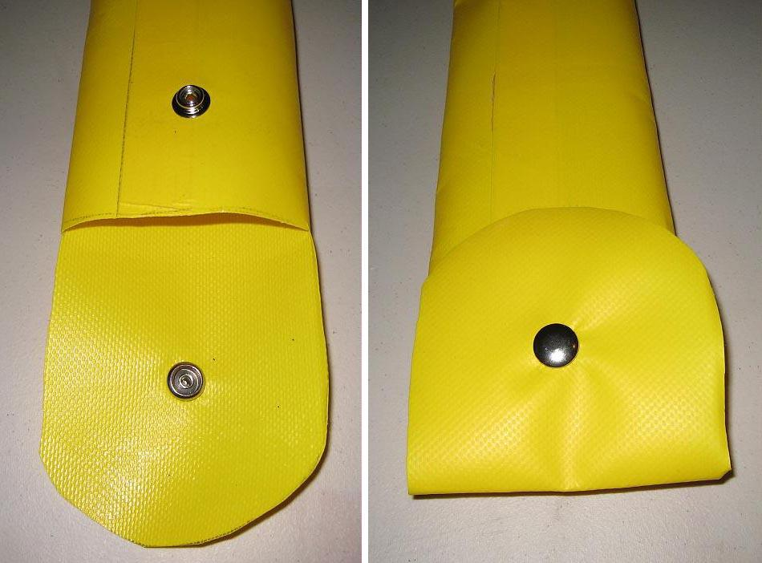

| PVC Paddle Bags ( page 3 of 5) | Menu Last Page Next Page |
|

Attach snap fastener's to the flap and bag. Follow the directions on the package. If the bag is used for a one-piece Greenland Paddle, then only one flap is required. If the bag is used for a take-apart paddle, use two flaps as this makes it easier to insert the individual paddle sections.
|
|